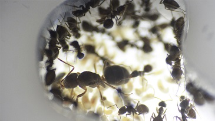

Черные садовые муравьи
Краткое описание
Латинское название — Lasius niger, в народе известен как черный садовый муравей. Несмотря на свое название, это не абсолютно черные, а скорее тёмно-бурые муравьи. Обитает в полях и садах. Очень известный и распространенный муравей, является серьезным конкурентом для других видов средней полосы России. Агрессивные и воинствующие муравьи, которые никогда не дадут в обиду своих сородичей. Lasius niger отлично подходит для содержания в муравьиных фермах, поскольку этот вид неприхотлив и живуч.
Характеристики
- Артикул: 103568941
- Название вида: Lasius niger
- Сложность: Легкая
- Размеры: 4-5 мм рабочие, до 10 мм матка
- Солдаты: нет
- Рацион: Мёртвые насекомые, сироп, вареное мясо, яйцо
- Численность: До 100 тыс.
- Зимовка: не требуется
- Формикарий: Гипсовый, пенобетонный
- Особенности: Мелкий, но активный и дружный вид. Могут обходиться без насекомых, питаясь другими альтернативными кормами. Хорошо лазает по стенкам, нужна защита от побегов.
Полное описание
Черные садовые муравьи — своего рода классика для мирмикиперов. Этих мелких и дружных муравьёв видел каждый — именно они строят в полях муравейники-кочки, они же сбегаются толпой на любую сладость, упавшую на землю. И несмотря на свои небольшие размеры, эти муравьи очень интересны для наблюдения.
Может показаться, что из-за их обыденности в них нет ничего интересного, однако это не так. Черные садовые муравьи это тот вид, который удивит вас своим коллективным поведением. Они будут прокладывать дорожки к источникам пищи (особенно, если вы будете использовать большую арену), если пища слишком крупная — будут сообща перетаскивать её в гнездо, а в случае опасности вся колония мобилизуется, чтобы защитить свою королеву.
Информация для заказа
- Наличие: есть
- Количество: Матка и 5-15 рабочих
- Цена: 500 ₽
- Стоимость доставки: 300 руб. Возможен самовывоз.